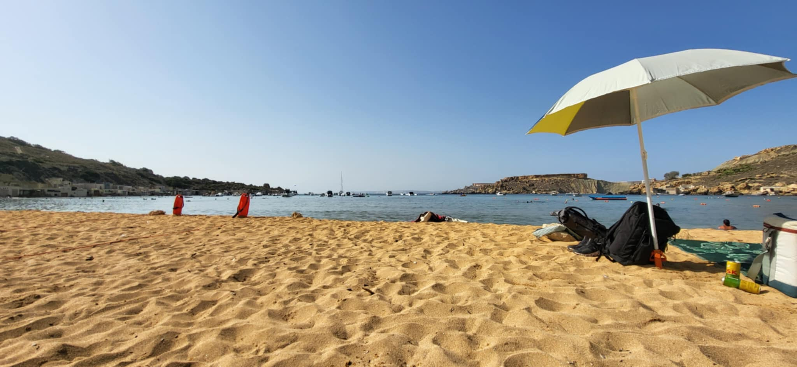
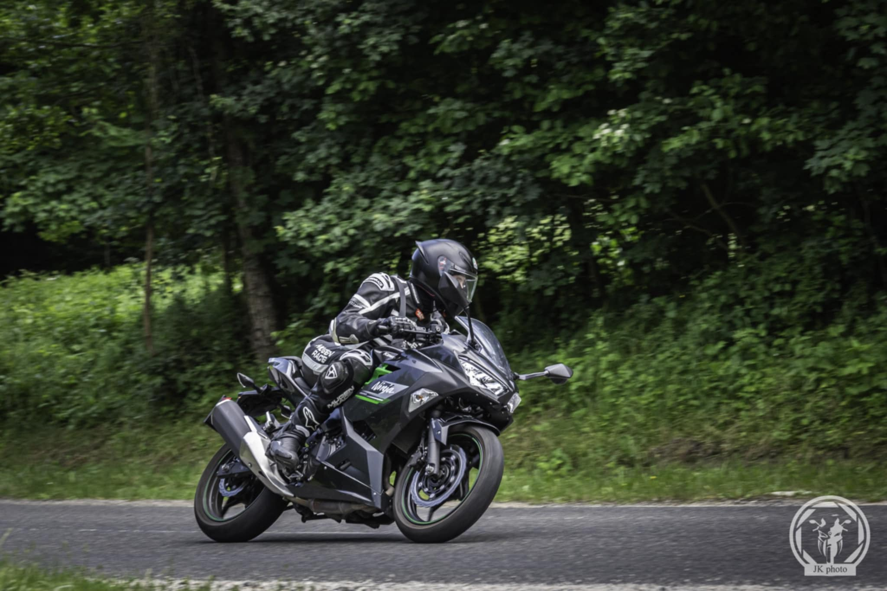

About Me
My name is Mihály Lengyel, and Im a student from Sopron, Hungary.
I’ve been passionate about the world of IT since childhood. Ever since I got my first computer,
I’ve been fascinated by how games, websites, and different applications work that curiosity
inspired me to start programming.
Today, I actively engage with technology both in and outside of school, continuously improving my
skills in software and web development. My goal is to build a successful career in this field,
create meaningful projects, and contribute to the growth of the IT industry.
Im currently studying at the The IMC Krems in Krems,
working toward a BSc degree in Informatics.
Alongside my studies, I work part-time at Cinema City Sopron as an
manager, where Im gaining teamwork and communication experience.
Software, Education, and Growth
This page collects my ideas, projects, and experiences as I progress through my studies and side projects.
Topics I focus on include React, .NET, WPF, SQL, testing, and cybersecurity basics.
My Skills
A selection of the technologies and tools I work with during my projects and studies.
🎨 Frontend
- React
- JavaScript
- HTML5
- CSS3
- Tailwind CSS
- Bootstrap
⚙️ Backend
- ASP.NET Core (C#)
- Express.js
- Python
- Java
- C / C++
🖥 Desktop & Cross-Platform
🧰 Tools & Collaboration
- Git & GitHub
- Jira
- Visual Studio / VS Code
Beyond Coding

🎵 Making Music
I enjoy composing electronic music and exploring sound design as a creative hobby.

🎮 Gaming
Gaming helps me relax and often inspires me to build better, more immersive applications.

✈️ Traveling
I love discovering new places and cultures it keeps me motivated and open-minded.

🏍️ Motorcycling
Riding gives me a sense of freedom and focus. I enjoy exploring new roads, meeting other riders, and
discovering new places on two wheels.